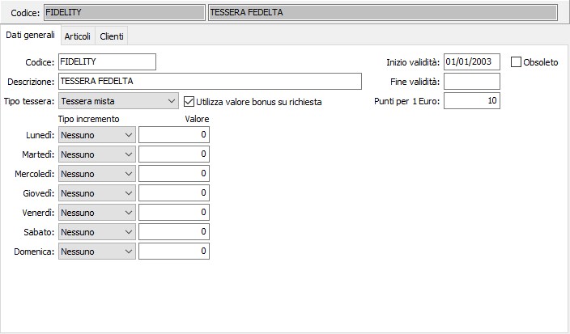
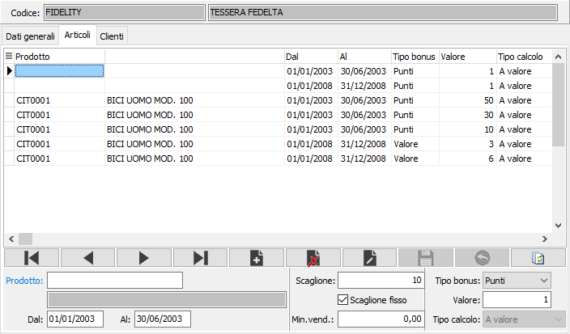
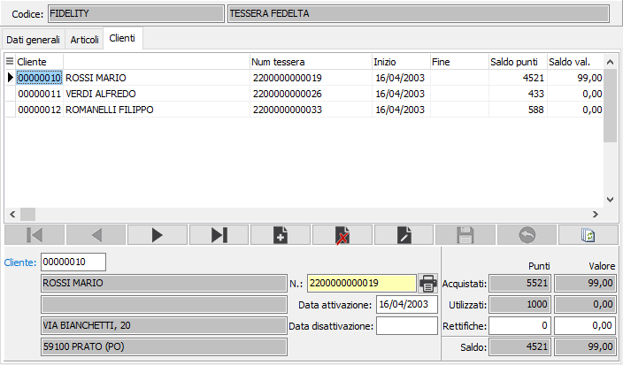

Tessere fedeltà
Le tessere fedeltà consentono la gestione di accrediti di bonus (sia a punti che a valore) e la possibilità di utilizzare tali bonus da scalare su successive vendite oppure per il prelievo di prodotti da un apposito catalogo premi.
Consentono promozioni speciali per i possessori di tessera e l'archiviazione della clientela.
Sulla tool bar sono inoltre attivi i bottoni Stampe di spool (Shift+F2), Anteprima di stampa (F2), Stampa (Ctrl+F2).
La finestra video relativa alla manutenzione delle tessere fedeltà si articola su tre pagine video (linguette).
Linguetta Dati generali

CODICE: codice alfanumerico, a libera scelta dell'utente, per individuare la tessera attiva. Sul campo sono attive le funzioni di ricerca (F9) sulla tabella stessa.
DESCRIZIONE: campo alfanumerico per inserire la descrizione della tessera attiva.
TIPO TESSERA: definisce la tipologia della tessera: a punti, a fatturato, mista.
Utilizza valore bonus su richiesta: se la casella è spuntata l'utilizzo dell'eventuale bonus accumulato potrà essere utilizzato come abbuono a discrezione dell'utente in fase di chiusura vendita, altrimenti non verrà mai accumulato e sarà immediatamente assegnato all'abbuono. Il parametro è attivo su tessere a valore o miste.
INIZIO VALIDITÀ: indica la data di inizio validità della tessera.
FINE VALIDITÀ: indica la data di fine validità della tessera.
Punti per 1 Euro: Indicare il numero di punti necessari per avere un Euro di sconto. Il parametro è valido solo per tessere a punti o miste.
OBSOLETO: flag attivabile dall’utente per inibire il possibile utilizzo dell’elemento di tabella in esame nelle successive transazioni.
INCREMENTI GIORNALIERI: consentono promozioni giornaliere per i possessori della tessera attiva, ad esempio punti doppi il martedì. Il tipo di incremento può essere a valore oppure in percentuale ed il valore assume il significato in conseguenza al tipo selezionato. L'incremento riguarda, nel giorno indicato, tutti i premi che la tessera può prevedere.
Linguetta Articoli
La linguetta contiene le informazioni relative ai bonus, in punti o valore, da assegnare ai possessori della tessera ed alle modalità di assegnazione dei bonus stessi.

PRODOTTO: indicare il prodotto il cui acquisto conferisce il bonus. Nel caso il campo venga lasciato vuoto il bonus sarà concesso in relazione al valore dello scontrino, altrimenti in relazione alla quantità di prodotto acquistata. Sul campo sono attive le funzioni di ricerca (F9).
DAL: definisce la data di inizio validità del bonus.
AL: definisce la data di fine validità del bonus.
SCAGLIONE: indica lo scaglione per il quale si ha diritto ad ottenere il bonus.
SCAGLIONE FISSO: definisce se lo scaglione è da considerarsi fisso (casella con segno di spunta). Se lo scaglione è definito fisso, al raggiungimento di ogni suo multiplo si ha diritto al bonus, altrimenti il bonus viene assegnato al raggiungimento o superamento dello scaglione.
MINIMO VENDITA: valido con scaglione fisso; indica l'importo minimo che deve avere la vendita per accedere al bonus.
TIPO BONUS: definisce la tipologia del bonus: a punti o a valore.
VALORE: indica il valore del bonus.
TIPO CALCOLO: attivo solo per bonus a valore; definisce se il bonus è un valore oppure una percentuale da scontare sul totale scontrino.
Linguetta Clienti
La finestra permette di inserire i clienti possessori della tessera. Ad ogni cliente viene attribuito automaticamente un numero di tessera. Con l'apposito bottone è possibile stampare l'etichetta con il codice a barre della tessera. In questa sezione sono visibili anche i progressivi ed il saldo della tessera, a punti oppure a valore in relazione al tipo di tessera.

CLIENTE: indica il cliente intestatario della tessera. Sul campo sono attive le funzioni di ricerca (F9) e manutenzione (CTRL+W) sulla tabella stessa.
N. TESSERA: indica il codice a barre della tessera. Viene calcolato automaticamente dalla procedura; con l'apposito pulsante è possibile stampare l'etichetta con il codice a barre da apporre sulla tessera stesa.
DATA ATTIVAZIONE: indica la data in cui è stata attivata la tessera.
DATA DISATTIVAZIONE: indica la data in cui è stata disattivata la tessera.
RETTIFICHE: valori di rettifica che l’utente può manualmente indicare per rettificare il saldo finale della tessera.